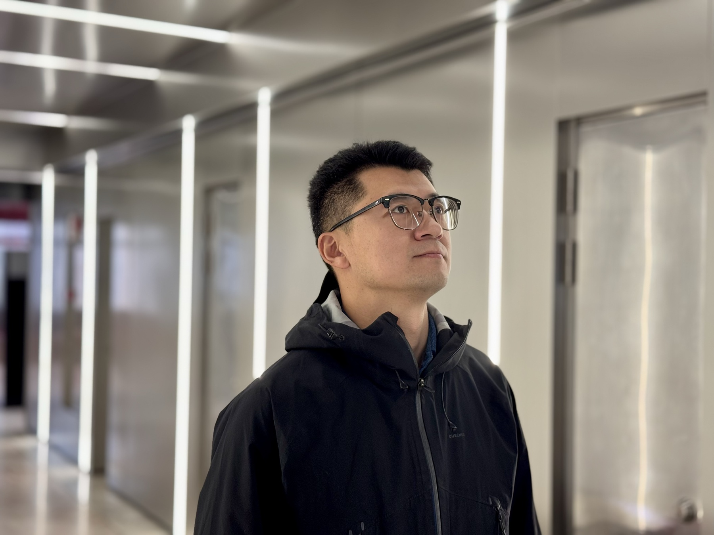
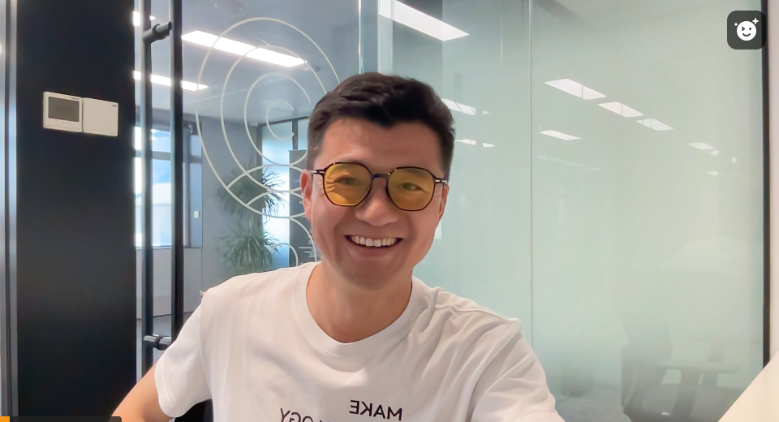
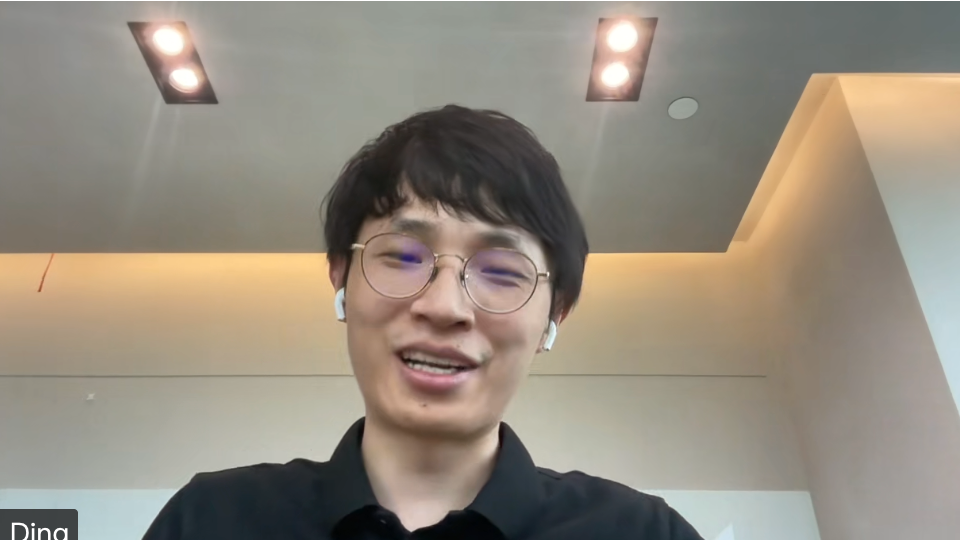
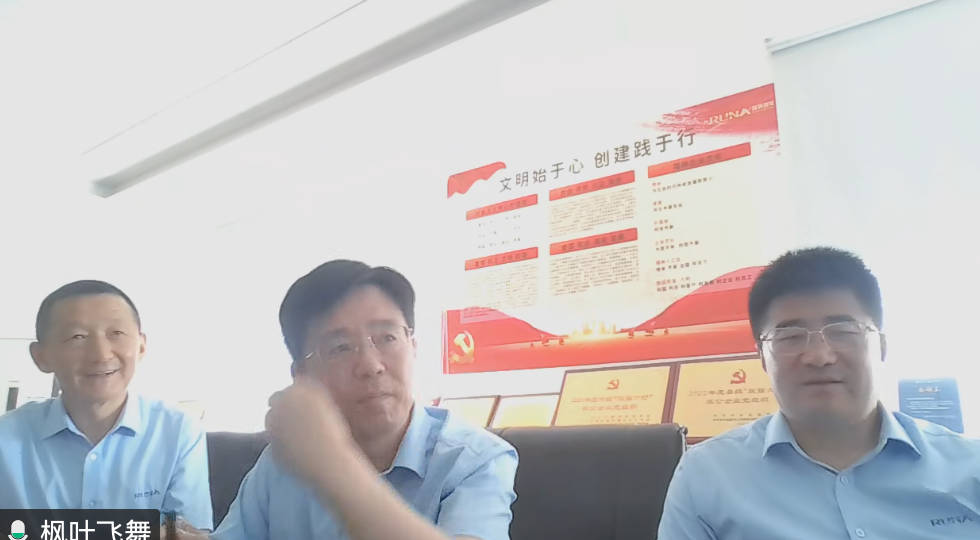
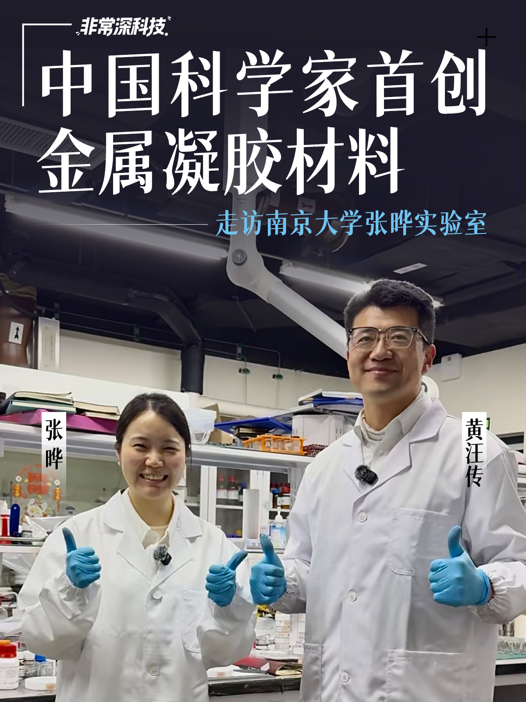
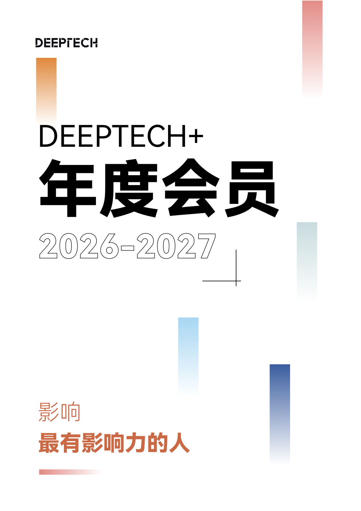

GLOBAL RECRUITMENT · 2026—2027
把企业的
下一道难题，
带到科学前沿。
DEEPTECH+ 是面向企业家的科学社区。我们把制造、材料、能源、AI 与生命科学的真实需求，带进青年科学家、产业专家与全球科技网络的长期对话。
A private science community for enterprise leaders shaping what comes next.

SCIENCE × INDUSTRYTR35 TALENT NETWORKVERY DEEPTECHMIT TECHNOLOGY REVIEW CHINASCIENCE × INDUSTRY
WHY DEEPTECH+
企业不缺概念，
缺的是抵达前沿的人。
对于正在做业务转型、产品升级或技术布局的企业家，最大的成本不是信息不足，而是不知道该向谁提出真正的问题。
MEMBER JOURNEY
不止“认识一位科学家”，
而是建立一条技术判断路径。
A question, a point of view, then the right conversation.从企业问题出发，先做清晰的技术翻译，再选择能够推进下一步的人与场景。对接在企业与科学家双向意愿确认的基础上进行。
把问题问准
把“想找 AI / 材料 / 生物技术”转成可以被研究者理解的业务、工艺或产品问题。
看清技术位置
基于产业趋势、科学进展与应用门槛，判断什么值得现在进入，什么需要继续观察。
进入小范围对话
通过科学家精准对接、闭门课与专题活动，把企业家的具体需求带到适合的研究者面前。
持续跟进
从一次见面延展为技术观察、项目验证、内容传播或产业资源的长期协作。



MEMBER MATCH · A REAL SESSION
会员服务的价值，
在一场真正的对话里。
它石智航 × 瑞纳智能的对接会，由黄师傅组织，把企业正在经历的技术问题带到科学家的研究语境中。不是泛泛介绍资源，而是围绕问题、方向与下一步行动进行具体澄清。
From industrial context to a focused scientific conversation.企业技术问题科学家深度交流会员服务现场
THE ECOSYSTEM
内容、人才、活动与转化，
不是四件孤立的事。
DeepTech 把科学传播作为基础设施，把青年科学家网络、研究咨询、品牌影响力与产业服务组织成一张可以被企业使用的资源图谱。
前沿科技内容
从《麻省理工科技评论》中文版、DeepTech 到《深科技内参》，用全球视野持续理解技术如何改变产业。
TR35 人才网络
围绕人工智能、能源材料、生物医药、芯片与智能制造，长期跟踪具有未来影响力的青年创新者。
非常深科技
黄师傅走进实验室，用人物、实验与问题把“看不见的研究”翻译成企业家能参与的现实。
闭门技术场
会员年会、前沿分享、产业对接会与青年科学家沙龙，让高密度交流在合适的人之间发生。
研究与咨询
从技术溯源、产业研究到地方与园区规划，为技术转化寻找更接近真实场景的方向。
成果转化实验室
把发现、研判、传播、资本与企业资源接在一起，帮助原创技术更早进入可验证的产业路径。

TR35 SCIENTISTS
科学家，不该只在
获奖名单里出现。
我们把“获奖理由”继续翻译成企业家可以判断的应用方向：它解决什么问题、现在在哪个阶段、适合与什么样的企业对话。
 TR35 CHINA · 2018
TR35 CHINA · 2018罗景山
南开大学教授、博导
人工光合作用、钙钛矿太阳能电池。对能源企业而言，核心问题是把太阳能与二氧化碳转化带向更可用的材料与器件。
查看南开大学最新资料 → TR35 CHINA · 2021
TR35 CHINA · 2021陈倩
苏州大学教授、博导
生物材料与肿瘤免疫治疗。适合关注药物递送、医疗器械、诊疗一体化和生命科学产业化的企业。
查看苏州大学资料 → TR35 CHINA · 2023
TR35 CHINA · 2023张晔
南京大学副教授、博士生导师
柔性能源与生物电子器件。适合先进材料、可穿戴、植入式医疗与下一代电源系统相关企业。
查看南京大学资料 → TR35 CHINA · 2022
TR35 CHINA · 2022罗昭初
北京大学物理学院研究员、助理教授
微纳磁电子与存算一体器件。对芯片、边缘计算、智能硬件与下一代算力架构具有直接启发。
查看北京大学资料 →PUBLIC SCIENCE SIGNALS
今天的科技新闻，
是明天的产业变量。
以下内容由麻省理工科技评论中文版与 DeepTech 公开资讯接口持续更新。把热点放进更长的技术周期里看，才有判断的意义。

ANNUAL MEMBERSHIP · 2026—2027
影响最有影响力的人。
面向中国制造型企业、高端制造业、上市公司、“专精特新”与“小巨人”企业，以及准备进入新技术周期的企业家。年度会员不卖泛泛的“资源”，只做有明确问题的科学连接。
首期特惠 9800 元 / 年年度会员价值 48000 元限量邀请报名
MEMBERSHIP APPLICATION
你的下一个技术问题，值得被认真对待。
先留下企业所处领域、转型方向和你希望解决的问题。黄师傅会以会员负责人的身份，判断是否适合进入社区并建议下一步沟通方式。
会员服务负责人：黄师傅
非常深科技视频主播 · 深科技学堂负责人 · DEEPTECH+ 企业家的科学社区负责人